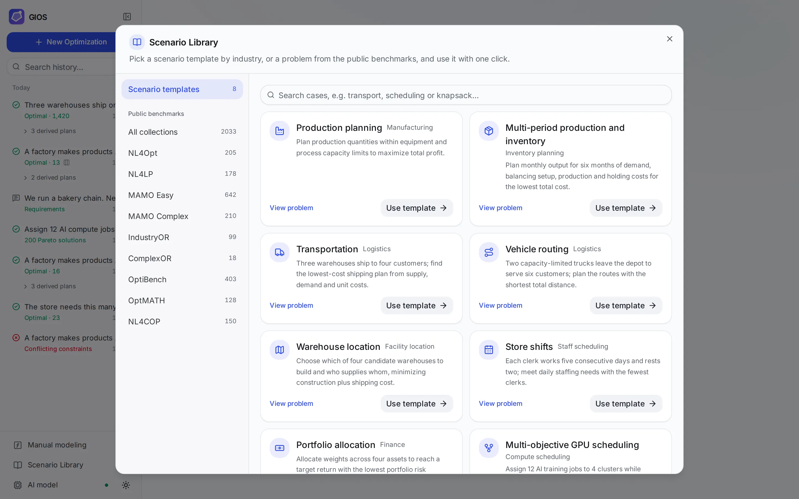

The Scenario Library in the sidebar holds two kinds of problems: scenario templates to start from common business questions, and public benchmarks to browse different statements and model structures. “Browse more scenario templates” below the home-page examples opens the same library.

Scenario templates#
Each template is a complete business description with its data in the text. Choose “Use template” to solve it as is, or change the numbers to your own first.
| Template | Industry | Decision |
|---|---|---|
| Production planning | Manufacturing | Product quantities within equipment and process limits, for maximum profit |
| Multi-period production and inventory | Inventory planning | Monthly output for six months, balancing setup, production and holding costs |
| Transportation | Logistics | Shipments from three warehouses to four customers at the lowest freight cost |
| Vehicle routing | Logistics | Routes for two capacity-limited trucks serving six customers, shortest total distance |
| Warehouse location | Facility location | Which of four candidate warehouses to build and who supplies whom, lowest build plus freight cost |
| Store shifts | Staff scheduling | Five-days-on, two-off shifts that cover daily demand with the fewest hires |
| Portfolio allocation | Finance | Weights for four asset classes that meet a target return with the lowest risk |
| Multi-objective GPU scheduling | Compute scheduling | Twelve training jobs on four clusters, trading power cost against failure risk |
The interactive demo on the product home page covers three small cases: production, staffing and delivery. Quickstart includes the production statement, recording and data. OR-Tools supplies staffing code.
Download production data#
Use production.json or production.csv. Explain products, time units and resource capacities before running.
Choose nonnegative integer quantities of A and B to maximize profit.
Each resource has 8 hours. Processing data uses hours per unit.
JSON usage rows identify resources and columns identify products.
Public problem collections#
The library contains 2,033 statements across nine groups:
| Collection | Count | Collection | Count |
|---|---|---|---|
| NL4Opt | 205 | IndustryOR | 99 |
| NL4LP | 178 | ComplexOR | 18 |
| MAMO Easy | 642 | OptiBench | 403 |
| MAMO Complex | 210 | OptMATH | 128 |
| NL4COP | 150 |
Statements use the OPT-Agent collection. Provenance and licenses are recorded in benchmark sources.
Use a problem#
Choose a group and statement, read it, and load it into the editor. Select method and solver according to domains, constraints and objective. After solving, tag the source and export the model, code and result.
For comparison, fix the data and preset and use method comparison. For tasks requiring additional data, develop fields and units in the requirements assistant.
Build your own case library#
Prepare business attachments, record meanings and adopted rules in notes, and tag runs. Revisions and scenarios connect later changes, gradually forming reusable team cases.